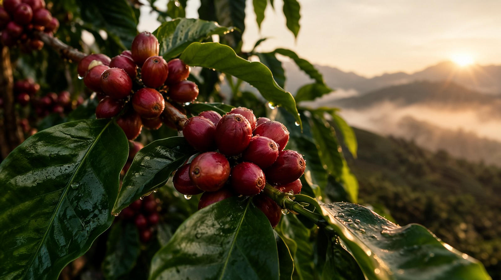
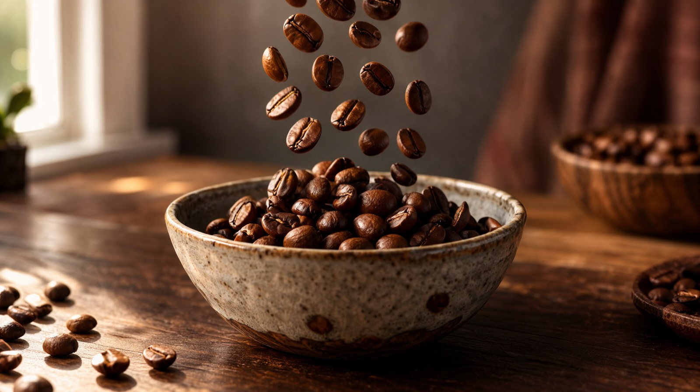
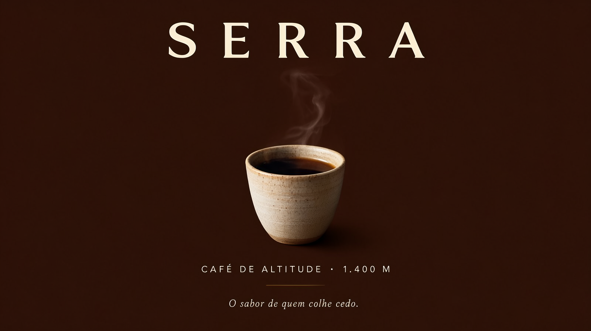
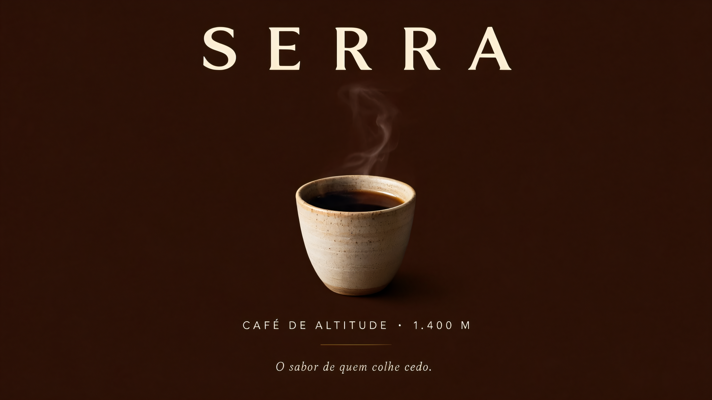

O que incomodava no v1 virou diagnóstico: steps errados na LoRA turbo, 480p esticado, zoom rígido e órbita em produto com texto. Reavaliação completa, matriz A/B de engines com QA por visão e um novo comercial — SERRA, café de altitude — em 720p, 20 s, cortes limpos.
Pesquisa + reavaliação
| Problema no v1 | Causa raiz | Correção no v2 |
|---|---|---|
| Qualidade "mole" do vídeo | LoRA turbo 8-step rodada a 4 steps (undercooked — QA dá 7/10 com banding e oversharpening) | 8 steps corretos (QA 9/10, zero artefatos) |
| Falta de nitidez final | 832×480 esticado p/ 720p + xfade esfumaçando tudo | Hero shot em Wan 2.2 a 1280×704 nativo; H3 a 8 steps com unsharp + grain; cortes secos |
| Movimento artificial | Órbita de câmera em produto com texto (warp) e pushes longos | Câmera travada, o movimento vem do sujeito (café caindo, vapor, crema); takes curtos |
| End card com zoom trêmulo | zoompan de 1344px de fonte | End card MOSS upscalado 4× (UltraSharp) → zoom suave de 2560px p/ 720p |
| QA olho-nu apenas | — | Auditoria por VLM local (Qwen3.5-9B via TextGenerate): nota + artefatos + transcrição por frame |
Engines avaliadas na reavaliação: Wan 2.7 (licença conflitante — fora), LTX-2.5 (22B, licença community com teto de US$10M — fora p/ cliente), Wan 2.2 TI2V-5B (Apache-2.0 ✓), MiniMax H3 (corrigido). As 2.6/2.7 do template do ComfyUI são apenas API em nuvem.
Matriz A/B · mesmo shot hero (espresso pour), mesma seed de movimento
O novo produto · 20 s · 1280×720
5 planos · cortes secos · grade quente (eq+unsharp+grain 2.5) · áudio ambiente gerado pelo H3 (pássaros, grãos, máquina, xícara) com micro-crossfades · fade in/out




cherry: "Static macro... gentle breeze... dawn light slowly brightening... Camera: locked tripod" beans: "beans cascade... natural physics... bowl stays sharp... Camera: locked tripod close-up" pour: "espresso pours... crema swirls... Camera: locked tripod macro, no camera movement" cup: "fingers shift gently around the warm cup... Camera: locked tripod medium shot" → Regra v2: câmera PARADA; o movimento é do sujeito. Nada de órbita em produto.
Números · v1 → v2
| Métrica | v1 (MOSS perfume) | v2 (SERRA café) |
|---|---|---|
| Steps do I2V | 4 (errado p/ LoRA 8-step) | 8 (H3) / 20 (Wan) |
| Resolução do take | 832×480 | 1280×704 (hero) + 832×480@8st |
| QA VLM do take | 7/10 (banding) | 9–9,5/10 (zero artefatos) |
| Movimento | órbita/zoom contínuos | câmera travada, 5 planos |
| End card | zoompan 1344px (tremido) | zoom 2560px pós-UltraSharp |
| Tempo de render dos takes | ~9 min (2×) | ~58 min (3×H3@8st + 1×Wan) |
| Stills (MOSS) | 6 × 30–40 s @ 1 MP | 5 × 45–55 s @ 1,44 MP |